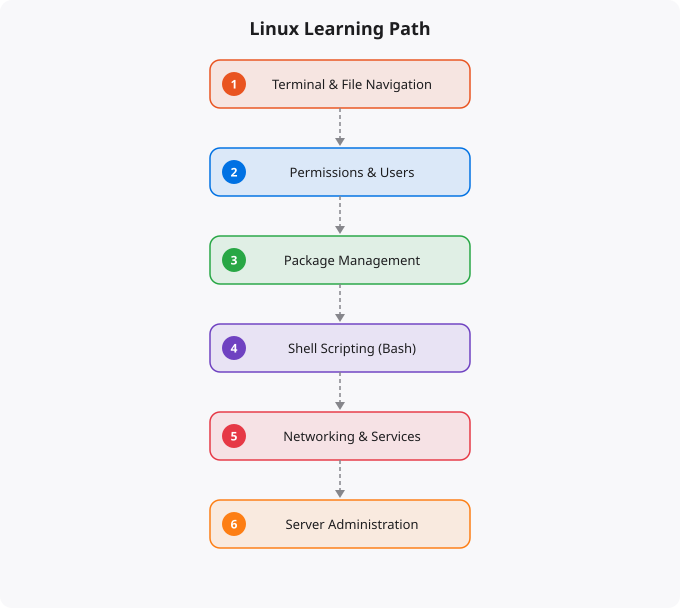

Linux runs the internet. The servers behind every major website, every cloud platform, every production database — the vast majority run Linux. Android devices run Linux. Supercomputers run Linux. Docker containers are built on Linux. Kubernetes orchestrates Linux containers. If you want to work in cloud engineering, DevOps, backend development, cybersecurity, or systems administration, Linux proficiency is not optional — it is the prerequisite for everything else.
This guide covers the complete journey from someone who has never used a command line to professional Linux competency. It is structured around real skills and real understanding, not just a list of commands to memorize.
When you deploy a web application to AWS, GCP, or Azure, it runs on a Linux VM or in a Linux container. When you SSH into a production server to debug an issue, you are using a Linux shell. When you write a Dockerfile, every command inside it runs in a Linux environment. When you configure a Kubernetes pod, it runs a Linux container image. The entire cloud infrastructure stack is built on Linux, and the tools and practices of modern software operations are designed around the Linux command line and Linux system concepts.
Windows and macOS proficiency does not substitute for Linux knowledge in most technology roles. You need to be comfortable in the terminal, understand Linux file permissions and user management, know how to install and manage software, work with logs, configure services, and troubleshoot system issues — all from the command line without a graphical interface.
Start with the fundamental mental model: in Linux, everything is a file. Your configuration settings are files. Your running processes have file representations. Your hardware devices have file representations. The file system is the primary organizational structure of the entire operating system. The terminal (also called the shell or command line) is your primary interface for interacting with Linux in professional contexts. Learn basic navigation: pwd to see where you are, ls to list directory contents, cd to change directories. Learn file operations: cp to copy, mv to move or rename, rm to delete, mkdir to create directories, touch to create empty files or update timestamps. Understand absolute paths (starting with /) versus relative paths (starting from your current location). Understand the key directories: /home for user files, /etc for system configuration, /var for variable data like logs, /usr for user programs, /tmp for temporary files.
Learn to use man pages — the built-in documentation for every Linux command. man ls, man grep, man find — these are your primary reference. Getting comfortable with man pages is a mark of Linux competency. Also learn to use the --help flag that most commands support for quick summaries of options.
Text processing is where Linux command line power becomes clear. Learn grep for searching text in files and command output. Learn sed for stream editing — substituting, deleting, and transforming text. Learn awk for column-based text processing. Learn sort, uniq, wc, head, and tail for basic text manipulation. Master pipes (|) and redirection (>, >>). Combining commands with pipes — where the output of one command becomes the input of the next — is how the Linux command line provides its power. cat /var/log/syslog | grep ERROR | tail -100 gives you the last 100 error lines from the system log without any programming.
File permissions and ownership are critical for security and for practical operation. Understand rwx permissions for owner, group, and others. Understand chmod, chown, and chgrp. Know what happens when permissions are wrong — applications fail to start, files cannot be read, services cannot write logs. Process management: ps to see running processes, kill to terminate them, top and htop for real-time system monitoring, jobs and bg/fg for managing foreground and background processes. Package management with apt (on Ubuntu/Debian) or yum/dnf (on CentOS/RHEL) — installing, updating, and removing software packages.
SSH (Secure Shell) is the primary tool for remote server management. Learn ssh for connecting, scp and rsync for file transfers, and SSH key management for passwordless authentication. Setting up SSH key pairs, managing authorized_keys files, and configuring SSH client settings are daily professional tasks. Systemd and service management: starting, stopping, enabling, and disabling services with systemctl. Understanding service files, checking service status, and reading service logs with journalctl. Shell scripting with bash: writing scripts that automate repetitive tasks, handle errors, accept arguments, and can be scheduled with cron. Disk and filesystem management: understanding mounting, /etc/fstab, disk partitioning, filesystem creation, and monitoring disk usage. Networking: ip addr and ifconfig for network interface information, ss and netstat for network connections, ping and traceroute for network diagnostics, nmap for port scanning, curl and wget for HTTP requests from the command line.
If your goal is cloud engineering or DevOps, additional areas are important: Linux namespaces and cgroups (the underlying technology that makes containers possible), kernel tuning with sysctl for performance optimization, ulimits and resource limits for processes, advanced networking with iptables and firewall configuration, performance profiling with tools like perf and strace, and log aggregation and monitoring with systems like the ELK stack. Understanding these deeper topics is what distinguishes a competent Linux user from a Linux expert. The expert does not just know what commands to run — they understand why the system works the way it does, and that understanding allows them to diagnose novel problems and make informed architectural decisions.
← Back to BlogDisclaimer: This article is intended for educational and informational purposes only. It does not provide professional, financial, security, or operational advice. Linux distributions, configurations, and security practices vary by environment. Always verify commands and configurations in a safe testing environment before applying them to production systems.